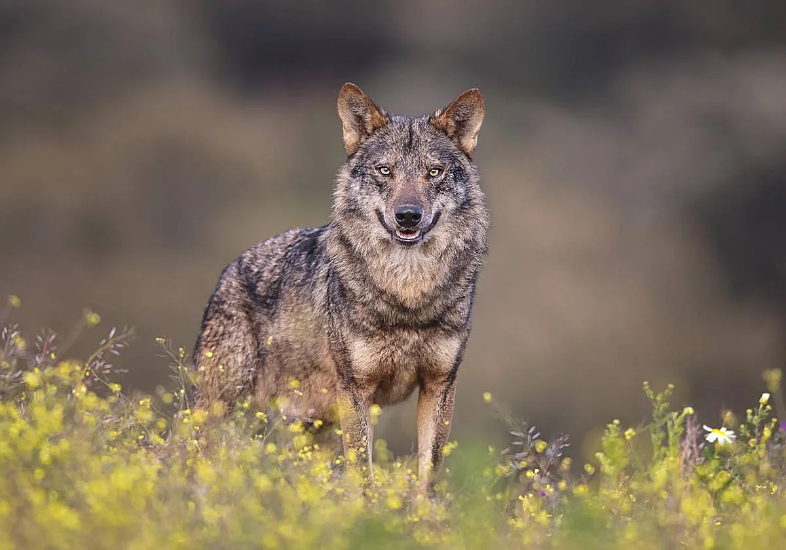

Información
Nombre científico
Canis lupus signatus
Extinción en Murcia
Siglo XX
Longitud
1.3 - 1.8 m
Altura
Hasta 70 cm
Peso
30 - 50 kg
Descripción
Aunque históricamente se distribuía abundantemente por toda la península ibérica, en 2018 se mantiene con poblaciones relativamente estables al norte del Duero, mientras que al sur su población es frágil y está fragmentada.
Los primeros registros fósiles del lobo ibérico se encontraron en Atapuerca y Ambrona, y tienen entre 400.000 y 200.000 años de antigüedad.